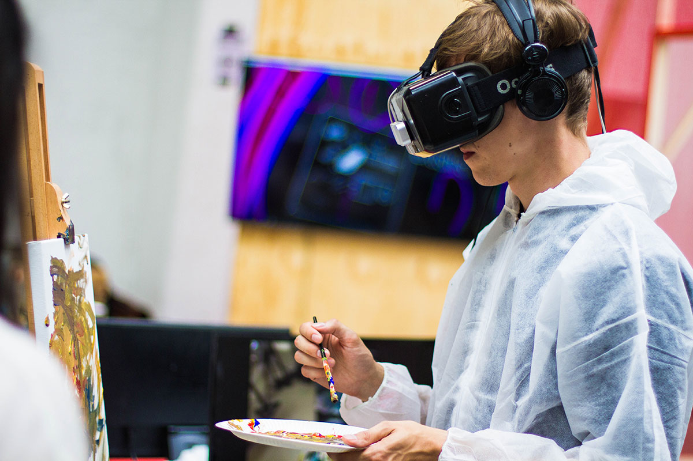

ABOUT US
The Aim of our Museum
The aim of our museum is to create a space where everyone can experience the wonders of our discoveries and perhaps even ignite a lifelong passion to continue the exploration of the world around us.
Watch Science Come To Life
We believe science should not be confined to the textbook, but brought to live through exhibits. This is why we have over 1000 different exhibits on the many varied subjects of science to explore. Many of these exhibits are designed for you to interact with and play around to see science come to life (apart from the dinosaur exhibits – they only come to life at night when everyone’s gone home).
Operating Hours:
Opening Hours:
- Monday: Closed
- Tuesday: 10:00 – 16:00
- Wednesday: 10:00 – 16:00
- Thursday: 10:00 – 16:00
- Friday: 10:00 – 19:00
- Saturday: 9:00 – 16:00
- Sunday: 9:00 – 13:00
Location:
Community science museum
123 Exampleroad, South Examplecity, 4014 Norway

Admission
Cost:
The entrance is free for all. There are guided tours of the museum that leave every hour. These tours are 70 NOK per person and include a handy printed guide of the museum. If you would like to organise a guided tour for your group of 6 or more people, please contact us to arrange the tour.